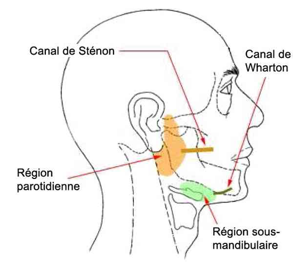
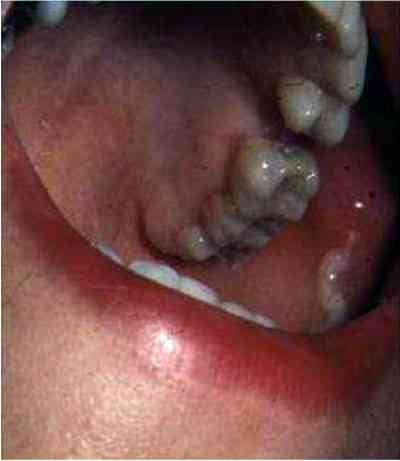
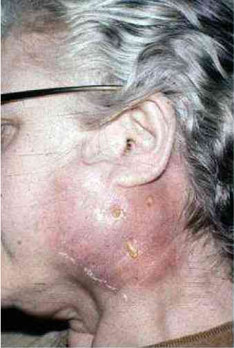
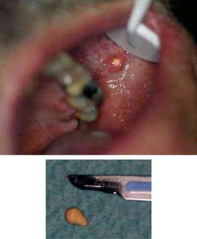

Bienvenue Sur Medical Education
Parotidite aiguë bactérienne
Spécialité : infectieux / pédiatrie / stomatologie /
Points importants
-
Terrain souvent débilité : personne âgée, traitement favorisant hyposialie (BZD, NLP), déshydratation sous-jacente
-
Collection : avis CMF
-
Traitement le souvent médical prolongé : 3 semaines
-
Anatomie de la glande parotidienne :
-
la plus volumineuse des glandes salivaires
-
traversée par le nerf facial (VII)
-
sécrète de la salive acheminée par le canal de Sténon qui s'abouche sur la face interne de la joue en regard de la 2e molaire supérieure
- la plus volumineuse des glandes salivaires
- traversée par le nerf facial (VII)
- sécrète de la salive acheminée par le canal de Sténon qui s'abouche sur la face interne de la joue en regard de la 2e molaire supérieure
 _190 Anatomie de la région parotidienne
Présentation clinique / CIMU
SIGNES FONCTIONNELS
Généraux
- Fièvre à 38-39°C
- AEG
Spécifiques
- Douleurs parotidiennes, otalgies exacerbées par la mastication
CONTEXTE
Terrain
- Adulte et surtout sujet âgé
Facteurs de risque
- Déshydratation
- Médicaments inhibiteurs de la salivation
- Hyposialie (Gougerot-Sjögren)
- Mauvaise hygiène bucco-dentaire
- Immunodépression
Circonstances de survenue
- Origine buccale par voie ascendante +++
- Infection de voisinage (cellulite de la face, ostéite mandibulaire...)
- Voie hématogène (septicémie) : rare
EXAMEN CLINIQUE
Premier geste
- Examen endobuccal recherchant du pus au Sténon signant le diagnostic en massant la glande d'arrière en avant
Inspection
- Tuméfaction inflammatoire région parotidienne unilatérale soulevant le lobe de l'oreille
- Trismus modéré
- Ostium du canal de Sténon inflammatoire (± pus)
 _191 Photo Pus au canal de Sténon gauche
- +/- fistulisation cutanée avec écoulement de pus : tardif
 _192 Photo Parotidite aiguë gauche avec fistulation gauche
- PF rare
Palpation
- Douleurs
- Pus à l'ostium du Sténon ou écoulement mucopurulent
- ± collection
CIMU
- Tri 3
Signes paracliniques
BIOLOGIQUE
-
NFS (Hyperleucocytose neutrophile)
-
Augmentation CRP
-
Hémocultures habituellement négatives
-
Prélèvement de pus à l'écouvillon
-
Ionogramme sanguin et créatinémie (avant TDM)
IMAGERIE
Scanner cervico-facial avec injection de produit de contraste : si suspicion de collection
- Parotidomégalie
- +/- collection et sa localisation
- Lithiase(s) salivaire(s) éventuelles
 _193 Photo Lithiase au canal de Sténon gauche
- Infection de voisinage
PRELEVEMENT BACTERIOLOGIQUE
Pus
- Flore polymicrobienne à prédominance streptococcique le plus souvent
Diagnostic étiologique
-
Favorisée par un terrain débilité
-
Lithiase salivaire
Diagnostic différentiel
-
Parotidite aiguë virale : le plus souvent bilatérale :
-
ourlienne (oreillons) : notion de contage, syndrome infectieux plus modéré, absence de suppuration
-
autres : Coxsackie A, HIV, Grippe, MNI, CMV...
-
Tumeurs parotidiennes bénignes ou malignes :
-
tuméfaction fixe, limitée, ± ancienne, pas de contexte infectieux
-
Parotidoses ou hypertrophies parotidiennes chroniques : gros mangeurs de féculents (pain, pommes de terre), alcooliques, anorexiques
Traitement
STABILISATION INITIALE
-
Urgence à évaluer en fonction de l'âge, l'état général du patient et l'existence ou pas d'une collection à drainer
-
A jeun
-
Si besoin, pose VVP pour réhydratation, antibiothérapie et antalgiques IV après prélèvements bactériologiques
MEDICAMENTS
-
Réhydratation IV si nécessaire
-
Antibiothérapie IV ou PO (selon le tableau clinique et paraclinique) par amoxicilline (Augmentin® 3 g /j) ou macrolide + imadazolé (Bi-Rodogyl® 2 cp x 3/j) à adapter en fonction de l'antibiogramme
-
Si besoin : Spasfon® PO ou IV
-
Antalgiques : Efferalgan® 1 g x 4/j ou Perfalgan® 1 g x 4/j
-
Jamais d'AINS
Surveillance
CLINIQUE
-
Signes de choc
-
Fièvre
-
Etat général
-
Signes de déshydratation
-
Douleurs
PARACLINIQUE
-
NFS
-
CRP
Devenir / orientation
EN PREHOSPITALIER
-
Transport aux urgences si absence de signes de choc septique
-
Transport en réanimation si signes de choc septique
EN INTRAHOSPITALIER
Diagnostic différentiel
-
Parotidite aiguë virale : le plus souvent bilatérale :
- ourlienne (oreillons) : notion de contage, syndrome infectieux plus modéré, absence de suppuration
- autres : Coxsackie A, HIV, Grippe, MNI, CMV...
-
Tumeurs parotidiennes bénignes ou malignes :
- tuméfaction fixe, limitée, ± ancienne, pas de contexte infectieux
- Parotidoses ou hypertrophies parotidiennes chroniques : gros mangeurs de féculents (pain, pommes de terre), alcooliques, anorexiques
Traitement
STABILISATION INITIALE
-
Urgence à évaluer en fonction de l'âge, l'état général du patient et l'existence ou pas d'une collection à drainer
-
A jeun
-
Si besoin, pose VVP pour réhydratation, antibiothérapie et antalgiques IV après prélèvements bactériologiques
MEDICAMENTS
-
Réhydratation IV si nécessaire
-
Antibiothérapie IV ou PO (selon le tableau clinique et paraclinique) par amoxicilline (Augmentin® 3 g /j) ou macrolide + imadazolé (Bi-Rodogyl® 2 cp x 3/j) à adapter en fonction de l'antibiogramme
-
Si besoin : Spasfon® PO ou IV
-
Antalgiques : Efferalgan® 1 g x 4/j ou Perfalgan® 1 g x 4/j
-
Jamais d'AINS
Surveillance
CLINIQUE
-
Signes de choc
-
Fièvre
-
Etat général
-
Signes de déshydratation
-
Douleurs
PARACLINIQUE
-
NFS
-
CRP
Devenir / orientation
EN PREHOSPITALIER
-
Transport aux urgences si absence de signes de choc septique
-
Transport en réanimation si signes de choc septique
EN INTRAHOSPITALIER
Surveillance
CLINIQUE
- Signes de choc
- Fièvre
- Etat général
- Signes de déshydratation
- Douleurs
PARACLINIQUE
- NFS
- CRP
Devenir / orientation
EN PREHOSPITALIER
-
Transport aux urgences si absence de signes de choc septique
-
Transport en réanimation si signes de choc septique
EN INTRAHOSPITALIER
Critères d'admission en hospitalisation
- Syndrome infectieux sévère notamment chez un sujet âgé
- Collection nécessitant un drainage chirurgical : avis chirurgie maxillo-faciale en urgence
Critères de sortie
- Syndrome infectieux modéré chez un sujet jeune sans ATCD particuliers
- Absence de collection à drainer
Ordonnance de sortie
- Antibiothérapie PO par Birodogyl® 1 cp x 3 /j pendant 21 jours
- Spasfon® : 2 cp x 3/j QSP 10 jours
- Antalgiques : Efferalgan® 1g x 4/ j
- Bains de bouche à base de chlorhexidine après chaque repas pendant 10 jours
- Sialologues : teinture mère de Jaborandi : XXX gouttes x 3 /j dans un ½ verre d'eau 10 jours
Recommandations de sortie
- Consultation de contrôle à 48h par un chirurgien maxillo-facial
- Boissons abondantes = 2 L/j (risque de récidive si persistance de l'hyposialie par déshydratation et/ou traitements favorisants)
- Massages parotidiens x6/j pour drainer le pus jusqu'à la guérison complète (du tragus vers aile du nez)
- Surveillance de la fièvre, des signes inflammatoires locaux et de la température tous les jours par le patient
- Hygiène bucco-dentaire
- Soins dentaires si nécessaires
Bibliographie
-
Szpirglas H, Guedj A, Auriol M et Le Charpentier Y. Pathologie des glandes salivaires. Encycl Méd Chir (Editions Scientifiques et Médicales Elsevier SAS, Paris, tous droits réservés), Stomatologie, 22-057-A-10, 2001, 13 p
Auteur(s) : Aymeric BARRIER, Arnaud RIGOLET